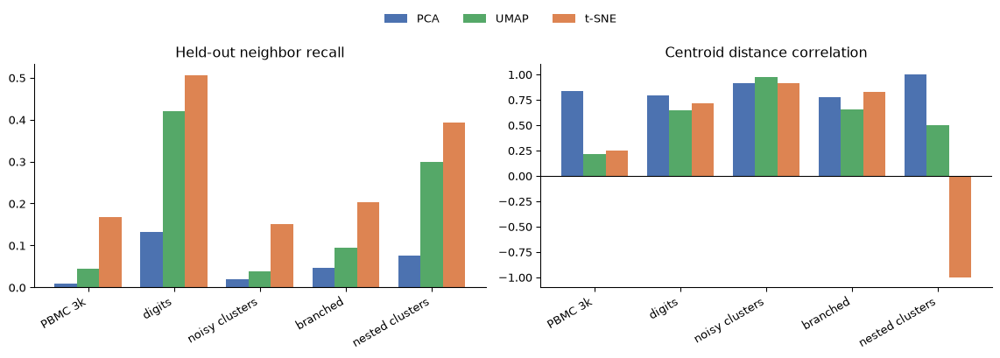

On a train/dev/test split, UMAP and t-SNE place held-out points beside their own kind; the arrangement of the groups they draw is arbitrary, and no held-out loss can catch it
Five clustering datasets split into train, dev and test sets, with PCA, UMAP and t-SNE fitted on train only. UMAP and t-SNE keep more held-out neighbors and classify held-out points better than PCA, but PCA wins the class-centroid distance correlation on three of five sets — the metric an elephant-shaped fake also passes. Dev-set tuning buys at most 0.003 on test. Neither method has a reconstruction loss or any comparable held-out value, so no setting can be chosen and no failure can be flagged.
Machine Learning
Statistics
Author
Ravi Kalia
Published
November 22, 2026
Neighbors Right, Picture Wrong
This post splits five clustering datasets into train, dev and test sets, fits PCA, UMAP and t-SNE on the training points only, and asks which parts of the resulting picture survive on points the fit never saw.
A held-out point is the simplest check a map can face: a new cell or digit should land beside its own kind. UMAP and t-SNE pass it. The part of the picture people actually read — which groups sit near which, and how far apart — is the part the check cannot see.
1 The split
Five datasets, all offline and deterministic:
PBMC 3k: 2,638 cells in 50 principal components with eight annotated types, from the 10x Genomics PBMC tutorial, cached in this repo’s When UMAP Lies series. Real single-cell data; a wrong grouping changes a cell-type call.
Digits: 1,797 8×8 handwritten digits in ten classes, scikit-learn’s loader. MNIST at lower resolution, where the methods are usually shown at their best.
Noisy clusters: 3,000 points, five Gaussian clusters in five dimensions plus 45 noise dimensions. Stands in for real data where a small signal sits in a large feature space; a method that follows the noise has found nothing useful.
Branched trajectory: 3,000 points along a trunk that splits into four branches, in 20 dimensions. Stands in for a differentiation path where branch identity and the shared trunk are both real structure.
Nested clusters: 3,000 points, three broad groups each holding three subgroups, in 20 dimensions. Stands in for a hierarchy with genuine structure at two scales.
Each set is split by stratified sampling into 60% train, 20% dev and 20% test. Scaling uses training statistics only. Every method is fitted on the training points alone; dev and test points are placed afterwards with transform.
Three scores read the map:
Held-out neighbor recall: of a test point’s ten nearest neighbors in the original space, the fraction that are also among its ten nearest training points on the map.
Held-out 10-NN accuracy: majority vote of a test point’s ten nearest training points on the map, scored against its label.
Centroid distance correlation: Spearman correlation between pairwise distances of class centroids in the original space and in the full 2-D map. This is the distance metric that an elephant-shaped fake passes.
PCA also reports a squared reconstruction error on held-out points. UMAP and t-SNE report no comparable value.
Figure 1: Two of the three scores, by dataset and method. Held-out neighbor recall rewards local structure; class-centroid distance correlation rewards the global arrangement. UMAP and t-SNE win the first and lose the second.
PCA held-out reconstruction MSE
PBMC 3k
0.969
digits
1.258
noisy clusters
0.914
branched
0.640
nested clusters
0.217

Figure 2
Three results stand out:
Local structure holds. UMAP and t-SNE keep more of a held-out point’s original neighbors on all five sets: on PBMC, t-SNE keeps 0.168 and UMAP 0.045 against PCA’s 0.009; on digits, 0.507 and 0.419 against 0.133. Held-out 10-NN accuracy beats PCA on four sets for UMAP and three for t-SNE; on noisy clusters t-SNE falls to 0.917 against PCA’s 0.930, and all three reach 1.000 on nested clusters.
Global structure does not. PCA wins centroid distance correlation on three of five sets: on PBMC it scores 0.831 against UMAP’s 0.214 and t-SNE’s 0.248; on nested clusters 1.000 against 0.500 and −1.000.
The metric an elephant passes is the one they lose. Chari and Pachter put cells on an elephant silhouette and found it matched UMAP and t-SNE on distance metrics (Part 1). Centroid correlation is that kind of metric, and UMAP and t-SNE lose it to PCA here.
2 No loss to choose
The routine of fitting on train, choosing on dev and confirming on test needs a score that ranks settings against a fixed target. PCA supplies one: squared reconstruction error on held-out points, 0.969 on PBMC and 1.258 on digits, computed against the same data for every number of components. UMAP and t-SNE supply none, so the nearest substitute is a held-out score of neighbor keeping.
Code
choices = []for dataset in (load_digits, load_noisy_clusters): X, y, name = dataset() Xtr, Xdev, Xte, ytr, ydev, yte = split(X, y) Ztr_def, _, Zte_def = embed(Xtr, Xdev, Xte, "UMAP") default_umap = knn_acc(Ztr_def, ytr, Zte_def, yte) Ztr_def, _, Zte_def = embed(Xtr, Xdev, Xte, "t-SNE") default_tsne = knn_acc(Ztr_def, ytr, Zte_def, yte)for method, grid in ( ("UMAP", [(nn, md) for nn in (5, 15, 50, 100) for md in (0.0, 0.1, 0.5, 0.99)]), ("t-SNE", [(p,) for p in (5, 10, 30, 50)]), ): best = (-1, None)for setting in grid: kw = ({"n_neighbors": setting[0], "min_dist": setting[1]}if method =="UMAP"else {"perplexity": setting[0]}) Ztr, Zdev, _ = embed(Xtr, Xdev, Xte, method, **kw) acc = knn_acc(Ztr, ytr, Zdev, ydev)if acc > best[0]: best = (acc, setting) dev_acc, setting = best Ztr_winner, _, Zte_best = embed(Xtr, Xdev, Xte, method, **dict( n_neighbors=setting[0], min_dist=setting[1]) if method =="UMAP"elsedict(perplexity=setting[0])) test_acc = knn_acc(Ztr_winner, ytr, Zte_best, yte) default = default_umap if method =="UMAP"else default_tsne choices.append({"dataset": name, "method": method, "dev winner": str(setting),"dev acc": round(dev_acc, 3), "test acc": round(test_acc, 3),"default test": round(default, 3),"gain": round(test_acc - default, 3)})display(pd.DataFrame(choices))
dataset
method
dev winner
dev acc
test acc
default test
gain
0
digits
UMAP
(5, 0.0)
0.956
0.967
0.967
0.000
1
digits
t-SNE
(10,)
0.956
0.972
0.978
-0.006
2
noisy clusters
UMAP
(50, 0.1)
0.970
0.970
0.967
0.003
3
noisy clusters
t-SNE
(30,)
0.937
0.917
0.917
0.000
Picking the best setting on dev buys at most 0.003 on test, and on digits the t-SNE winner scores 0.972 against the default’s 0.978. The default is already as good as the search.
With no held-out loss, every value of n_neighbors, min_dist and perplexity produces a valid map, and the dev score itself has a neighborhood size to set. No target stays fixed across settings, so a dev set cannot choose one, and a test set has nothing to confirm. The local win is real, but it is a win about which points sit together — not about the picture drawn around them, and not about a map you could check on new data.
3 Constraints
The local result is not in doubt: on these splits, UMAP and especially t-SNE place held-out points beside their own kind better than 2-D PCA. The claim here is narrower — the global arrangement those points inherit is not validated by anything in the fit. Centroid correlation over eight PBMC classes is sensitive to the two small classes, and t-SNE’s out-of-sample placement is openTSNE’s interpolation with its own settings, not a function learned by the fit. Five datasets and one split seed do not settle every dataset.